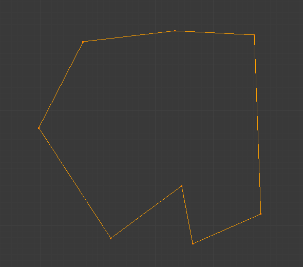
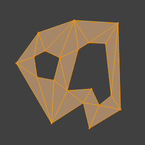

面工具¶
参考
Ctrl-F这些工具用于操作面。
创建边/面¶
参考
FThis will create an edge or some faces, depending on your selection. Also see Creating Geometry.

闭合的边线。 |

使用填充工具填充后。 |
填充¶
参考
Alt-F填充 工具从任意选中的边或顶点创建 三角 面，只要它们可以组成一个或多个完整的线环。

使用填充工具填充后。
注意，与创建多边形不同的是， 填充 支持孔洞。

带有孔洞的闭合线环。 |

使用填充工具填充后。 |
完美建面¶
参考
Alt-Shift-F完美建面 仅作用于现有选中面，通过重新排布选中的三角面，获得更加 平衡的 三角面(即减少细长三角面)。
- 最大角度
- 限制边线旋转，获得平整表面。

转换为网格的文本。 |

完美建面后, |


实体化¶
参考
接受一组输入面，通过均匀基础，赋予 非流形 表面体积。也可以通过 修改器 实现。使用此工具后，可以在操作面板设置偏移距离。
- 厚度
- 新生成面的偏移量。正值沿法线方向向内偏移挤出，负值向外挤出。

实体化前网格。 |

正厚度值实体化。 |

负厚度值实体化。 |
交集¶
交集(切割)¶
参考
相交工具用于将交叉部分切割为几何体。这有些类似布尔工具，不过无法计算内部/外部。沿交叉边缘分开表面，并选中新增的边。
- 源
- 选中/非选中
- 操作选中与未选中几何体的相交部分。
- 自身交集
- 操作选中网格的重叠部分。
- 分离
- 沿新增边线分离几何体。
- 合并阈值
- 见交集(布尔)
尖分面¶
参考
Alt-P该工具围绕一个中心顶点，将每个面都填充为扇形面。可作为对多边形三角化的一种方式，或者用于制作尖刺或凹坑。
- 尖分偏移
- ToDo.
- 相对偏移
- ToDo.
- 尖分中心
- 加权平均计算、平均值、边界范围
三角面 -> 四边面¶
参考
Alt-J此工具基于阈值，通过移除相邻两三角面的相邻边，创建四边面，将选中三角面转换为四边面。选中多个三角面后可调用该工具。
选中两个相邻三角面，使用快捷键 F 合并为四边面，或者选中两三角面的共用边，使用快捷键 X 也可以获得相同的结果。
此工具需要至少两个相邻三角面，才能生成一个四边面。即使选中偶数个三角面，也可能无法获得全部的四边面。事实上，此工具会从现有的三角面尽可能创建 最近似方形 的四边面，这也意味着一些三角面会保留。

三角面转四边面之前。 |

将三角到四边形后。 |
所有菜单和快捷键使用 网格工具 面板中定义的设定:
- 最大角度
- 用于控制该工具起作用的相邻三角面夹角阈值(介于0到180之间)。阈值设置为0.0时 ，仅合并构成完美矩形的相邻三角形(也就是共用斜边的直角三角形)。当两三角形的公共边较三角形其他边较短时，需调大阈值。
- 比较UV
- 启用后，将阻止UV映射中非相邻三角面的合并。
- 比较顶点色
- 启用后，将阻止顶点色不匹配的三角面的合并。
- 比较锐边
- 启用后，将阻止共用边为锐边的三角面的合并。
- 比较材质
- 启用后，将阻止使用非相同材质的三角面的合并。


{kind=link}
{kind=link}